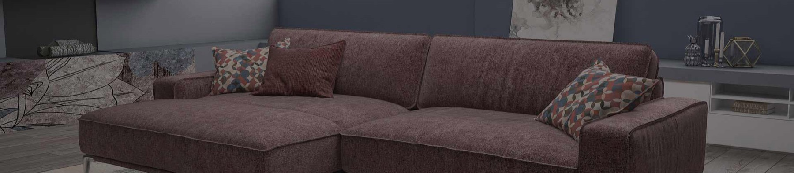
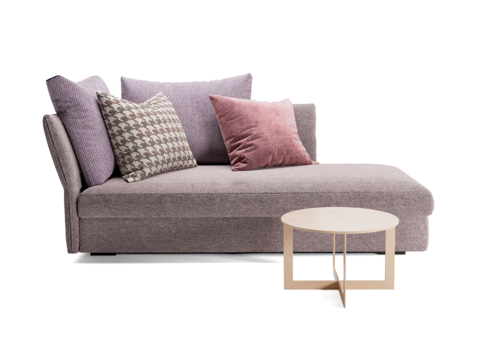

01 / 03
Tessuti riciclati
GreenFabrics
Tessuti d'arredamento in fibre riciclate, con certificazione GRS.

Dagli anni '60 selezioniamo tessuti per l'arredamento che danno carattere a divani, poltrone e sedute, nelle case e negli spazi dell'hospitality.
Scopri i tessutiPassa il mouse sul tessutoTrascina il dito sul tessuto Aragon 06 Petrol
Tre famiglie di materiali, ognuna con una promessa precisa: riciclato, antimacchia, pelle.
01 / 03
Tessuti riciclati
Tessuti d'arredamento in fibre riciclate, con certificazione GRS.

02 / 03
Tessuti antimacchia
Le macchie si tolgono usando solo un po' d'acqua: manutenzione semplice, in pochi minuti. intessutoitalia è distributore ufficiale Aquaclean.

03 / 03
Pelli e finte pelli
Pelli e finte pelli per divani, poltrone e sedute. Campionario disponibile su richiesta.

Clicca i punti sulla foto: ti diciamo quale tessuto è e dove trovarlo.



Aragon
Selezioniamo tessuti per l'arredamento per dare carattere e personalità agli spazi residenziali, commerciali e dell'hospitality.

La storia di intessutoitalia è una storia d'amore per pelli e tessuti d'arredamento, nata quando ai piccoli produttori artigianali di salotti cominciano ad affiancarsi i primi giganti del mobile imbottito.
Da allora il nostro magazzino serve aziende e professionisti che hanno bisogno di qualità e varietà senza dover ordinare grandi quantità: il just in time di un partner affidabile, con un ampio assortimento sempre pronto da spedire.
Chi siamo